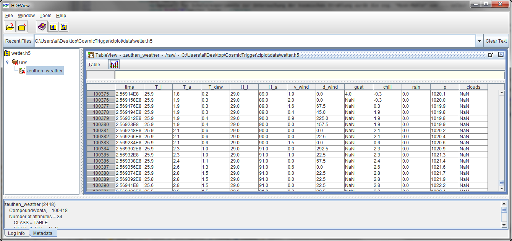
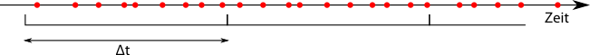
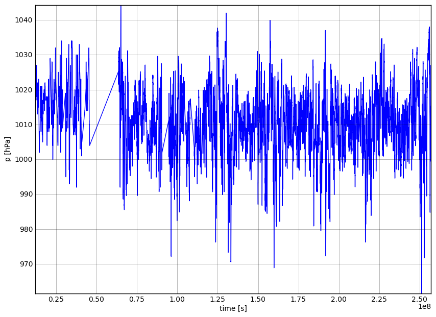
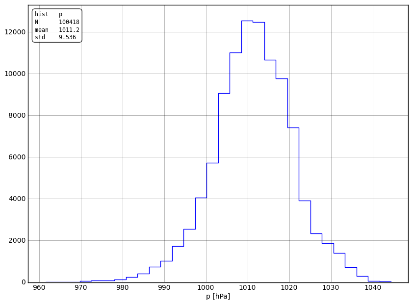

Anleitung
Diese Webseite stellt ein interaktives Werkzeug bereit, mit dem sich die Daten verschiedener Experimente analysieren lassen. Die Experimente und dieses Analysewerkzeug sind Projekte von Physik begreifen und Teilchenwelt.
Zur Zeit befindet sich dieses Auswertungstool im Testbetrieb.
Für weitere Info siehe: https://znwiki3.ifh.de/KosmischeTeilchen/Software: Webinterface
Hält man die Maus über ein Eingabefeld, so wird ein kurzer, beschreibender Hilfetext eingeblended.
Experimente
Die Daten, die auf dieser Seite ausgewertet werden können, stammen von den folgenden Experimenten.
Cosmic-Trigger, Zeuthen
Der Cosmic-Trigger besteht aus Teilen von Szintillationszählern, die bis zum Jahr 2000 im L3-Cosmic Experiment am CERN eingesetzt wurden.
Das Hodoskop besteht aus 3 übereinander angeordneten Szitillator-Ebenen. Jede Ebene ist aus vier 0.5×0.5 m² großen Segmenten zusammengesetzt. Wenn ein geladenes kosmisches Teilchen ein Segment durchfliegt, wird Szintillationslicht erzeugt, das ein Photomultiplier registriert und in ein elektrisches Signal umwandelt.
Die Segmente sind elektronisch miteinander verknüpft. Die Triggerbedingung ist, dass in einem Zeitfenster von 1/10000 Sekunden Länge ein Signal in mindestens einem Segment in jeder Ebene registriert wird. Nur dann wird die Information auf einen PC übertragen und abgespeichert.
Mit dem Trigger-Hodoskop werden seit Mai 2004 Daten genommen und in Datenfiles abgespeichert. Diese Daten erlauben eine Vielzahl von Untersuchungen, wie z.B. Bestimmung der Rate kosmischer Teilchen (Anzahl der Trigger pro Zeiteinheit) Variation der Triggerbedingung (1 Trigger/Ebene – Myon-Kandidat, Trigger in mehreren Segmenten/Ebene – Luftschauer) Rate in Abhängigkeit von den Wetterbedingungen (Luftdruck, Temperatur, Luftfeuchte) Vergleich der Ergebnisse verschiedener Jahre.
Szintillationsdetektor, FS Polarstern
Im Jahr ???? wurde ein kleiner Myon-Detektor auf dem Forschungschiff "Polarstern" installiert. Die Polarstern unternimmt jährlich Fahrten von...
Der Detektor besteht aus...
Wetterballons, FS Polarstern
Auf der Polarstern werden routinemäßig Wetterballonaufstiege durchgeführt. Die bei diesen Aufstiegen gewonnen Daten liefern Informationen über...
IceTop-Tank, Zeuthen
Seit ???? befindet sich im DESY Zeuthen ein Tank aus dem IceCube-Experiment. Dieser Tank...
Myon-Mühle, Zeuthen
Speziell für Schülerexperimente zur Untersuchung der kosmischen Strahlung wurde die sog. "Myon-Mühle" von ... selbst konstruiert. Dieser Detektor erlaubt es...
Wetterstation, Zeuthen
Hierbei handelt es sich eigentlich nicht um ein eigenständiges Experiment, sondern einfach um die Erfassung von Wetterdaten. Diese Wetterdaten werden beim Bereitstellen der Daten der Experimente in Zeuthen im den Daten der Experimente kombiniert. Dies ermöglicht die Auswertung der Experimentdaten zusammen mit den Wetterinformationen.
Datenanalyse
Struktur der Datensätze
Alle Datensätze, die mit Hilfe dieser Webanwendung ausgewertet werden können, haben die Struktur einer Tabelle. Jede Spalte der Tabelle steht für eine Größe, die in dem jeweiligen Experiment erfasst wird. Jede Tabellenzeile steht für einen Datenpunkt und enthält die Werte der einzelnen Größen. Ein Zeile entspricht also z.B. einem Detektorevent oder Wetterdaten zu einem bestimmten Zeitpunkt.
Welche Spalten eine solche Tabelle enthält, hängt vom Experiment ab und welche Größen in diesem erfasst werden. Die erste Spalte ist in der Regel immer die Zeit, denn in allen Experimenten wird ein voller Satz Messgrößen zu einem gemeinsamen Zeitpunkt erfasst. Es treffen z.B. ein oder mehrere Teilchen auf einen Detektor, was die Datenspeicherung auslöst. Die vom Detektor erfassten Messwerte werden darauf hin, versehen mit einem Zeitstempel, in eine neue Zeile der Datentabelle geschrieben. Bei den Wetterdaten wird in festen Zeitabständen eine Tabellenzeile hinzugefügt, die sämtliche, von der Wetterstation erfassten Messgrößen, enthält.
Die Datentabellen werden bei der Aufbereitung für die Auswertung in HDF5-Tabelle konvertiert. HDF5 ist ein effizientes, offenes Datenformat, das unter anderem für die Speicherung von Daten in Tabellenform verwendet werden kann. Liegen die Daten verschiedener Experimente in einem gemeinsamen, einheitlichen Format vor, so können sie mit der selben Software analysiert werden.
Zum Betrachten der Datentabellen kann z.B. HDFView verwendet werden. HDFView ist ein Programm zum Betrachten des Inhalts von beliebiegen HDF-Dateien. Die Tabelle der Wetterdaten sieht in HDFView so aus:
Zeit
 Die Angabe eines Zeitpunktes besteht aus Datum, Uhrzeit und einer Angabe der Zeitzone (Sommer-/Winterzeit),
z.B. "02.03.2008 14:23:55.678 +0100". Das "+0100" am Ende bedeutet 1 Stunde Verschiebung von UTC (siehe ISO-8601).
Derartig formatierte Zeitangaben sind zwar gut lesbar, aber man kann schlecht mit ihnen rechnen und sie benötigen viel Speicherplatz.
Daher werden Zeitpunkte in den Datentabellen als Fließkommazahl gespeichert. Der Wert der Zahlen in der Tabellenspalte "time" entspricht der
Anzahl der Sekunden seit 01.01.2004 00:00:00 +0100. So kann z.B. eine Größe in einem xy-Plot über der Zeit
dargestellt werden, ohne die Datum-Uhrzeit-Angaben erst in Zahlenwerte umrechnen zu müssen. Die zwischen zwei Zeitpunkten vergangene Zeit kann auch sehr
leicht berechnet werden, denn man braucht nur die Differenz der Zahlenwerte zu bilden und erhält die Zeitdifferenz in Sekunden.
Die Angabe eines Zeitpunktes besteht aus Datum, Uhrzeit und einer Angabe der Zeitzone (Sommer-/Winterzeit),
z.B. "02.03.2008 14:23:55.678 +0100". Das "+0100" am Ende bedeutet 1 Stunde Verschiebung von UTC (siehe ISO-8601).
Derartig formatierte Zeitangaben sind zwar gut lesbar, aber man kann schlecht mit ihnen rechnen und sie benötigen viel Speicherplatz.
Daher werden Zeitpunkte in den Datentabellen als Fließkommazahl gespeichert. Der Wert der Zahlen in der Tabellenspalte "time" entspricht der
Anzahl der Sekunden seit 01.01.2004 00:00:00 +0100. So kann z.B. eine Größe in einem xy-Plot über der Zeit
dargestellt werden, ohne die Datum-Uhrzeit-Angaben erst in Zahlenwerte umrechnen zu müssen. Die zwischen zwei Zeitpunkten vergangene Zeit kann auch sehr
leicht berechnet werden, denn man braucht nur die Differenz der Zahlenwerte zu bilden und erhält die Zeitdifferenz in Sekunden.
Berechnung von Raten
Im Fall der Experimente, bei denen jede Zeile der Datentabelle einem Detektorereignis entspricht, sind die Zeitpunkte, zu denen die Detektormessgrößen erfasst werden, nicht fest vorgegeben. Ausgelöst wird der Trigger (der Speichervorgang) von z.B. der Strahlung (Teilchen), die auf den Detektor treffen. Die Zeitpunkte der Detektorereignisse sind also zufällig.
Von Interesse ist oft die Ereignisrate, d.h. wieviele Ereignisse pro Zeitintervall aufgezeichnet werden. Um die Rate zu ermitteln, wird hier wie folge vorgegangen. Die Zeit-Achse wird in Zeitfenster gleicher Größe \(\Delta t\) unterteilt. In jeden Zeitintervall wird die Anzahl \(N\) der Ereignisse ausgezählt.
Die Rate \(R\) ergibt sich dann zu \[R = \frac{N}{\Delta t}.\] Jedem Zeitintervall wird also eine Rate zugeordnet.
Aus der ursprünglichen Datentabelle wird durch die Ratenberechnung eine neue
Tabelle erzeugt, in der alle Datenpunkte in einem Zeitintervall zu einem neuen Datenpunkt zusammengefasst werden. Die geschieht sobalb ein Zeitfenster angegeben wurde.
Der Zeitpunkt, der diesem neuen Datenpunkt zugeordnet wird,
ist die Mitte des Zeitintervalls. Alle anderen Größen der ursprünglichen Tabelle werden jeweils im Zeitintervall gemittelt und dem neuen Datenpunkt zugeordnet.
Zusätzlich zu den Mittelwerten aller Größen werden
Spalten für die Größen "rate", "weight" und "count" hinzugefügt. Im folgenden Beispiel wird die Größe \(a\) aus 9 Datenpunkten gemittelt zu 2.111 und
die Ereignisrate beträgt 0.45 Ereignisse pro Zeiteinheit.

"rate" enthält die Rate \(R\) und "count" die Anzahl \(N\) der Datenpunkte in Zeitintervall.
Gewicht
"weight" steht für das mittlere Gewicht \(G\) und ist der Mittelwert eines vom Benutzer definierten Ausdrucks (Feld "Gewicht", im Expertenmodus). Das mittlere Gewicht kann für zwei Zwecke eingesetzt werden.
1. Zur Bestimmung der Rate von Ereignissen eines Bestimmten Typs. Im obigen Beispiel wurde für das Gewicht der Ausdruck \(a \lt 3\) angegeben. Dieser Ausdruck wird in jedem Datenpunkt ausgewertet. Es handelt sich um einen boolschen Ausdruck, d.h. das Ergebnis der Auswertung des Ausdrucks in einem Datenpunkt liefert entweder 1 (wahr, wenn \(a \lt 3\)) oder 0 (falsch, wenn \(a \geq 3\)). Das mittlere Gewicht, der Mittelwert des Ausdrucks im Zeitintervall, ergibt sich in diesem Beispiel zu \[G = \frac{1+0+1+0+1+1+1+1+0}{9} = \frac{2}{3} = 0.666\ldots.\]
Die Rate der Ereignisse, die die Bedingung \(a \lt 3\) erfüllen, ergibt sich als Produkt der Rate \(R\) aller Ereignisse mit dem Mittelwert der Bedingung \(G\). \[R_G = R \cdot G.\] In diesem Beispiel also \(R_G=0.3\). Durch Angabe von "rate*weight" in einem Eingabefeld (x, y oder z) kann also die Rate eines bestimmten Ereignistyps ausgewertet werden.
2. Zur Bestimmung einer beliebigen mittleren Größe. Das Trigger-Hodoskop besteht aus 12 Detektorsegmenten, die jeweils entweder ein Signal "gesehen" haben oder nicht. Die Information, ob das Segment etwas gesehen hat, ist in den Tabellenspalten a1 bis c4 mit den Werten 1 (Signal) oder 0 (kein Signal) gespeichert. Man kann nun fragen: "Was ist die mittlere Anzahl von Segmenten, die ein Signal gesehen haben?" Die Anzahl der Segmente mit Signal bezeichnet man als "Multiplizität" des Ereignisses. Mittelt man diese über ein Zeitintervall, so erhält man die mittlere Multiplizität. Als Gewicht gibt man "a1+a2+a3+a4+b1+b2+b3+b4+c1+c2+c3+c4" an und erhält die mittlere Multiplizität in der Tabellenspalte "weight". Nun kann man z.B. die mittlere Multiplizität über der Zeit darstellen.
Schub
Das Eingabefeld "Schub" (engl. "shift") ist im Expertenmodus verfügbar. Hier wird ein Wert aus \((0,1]\) eingegeben. Der Wert gibt an, um welchen Anteil des Zeitfensters dieses jeweils weiterverschoben wird. Wird nichts angegeben, so entspricht dies einem Schub vom 1, d.h. das Fenster wird je um eine volle Fensterbreite verschoben. Die Fenster zur Ratenberechnung liegen bei Schub=1 also direkt nebeneinander und decken disjunkte Zeitbereiche ab.
Wird Schub<1 gesetzt, so wird das Fenster nur jeweils um einen Teil verschoben. Man erhält ein gleitendes Zeitfenster, was nun nicht mehr disjunkte Zeitbereiche abdeckt. Es werden folglich Ereignisse mehrfach gezählt.

Schnitte (Filter)
Mit "schneiden" (engl. "cut") bezeichnet man das Entfernen/Selektieren von Datenpunkten, die eine bestimmte Bedingung erfüllten. In Feld "Schnitt" kann eine Bedingung
(boolscher Ausdruck) angegeben werden. Der Ausdruck wird für jeden Datenpunkt ausgewertet und nur die Datenpunkte, bei denen der Ausdruck "wahr" ergibt, werden
in die Darstellung aufgenommen. Das Schneiden erfolgt nach der Ratenberechnung, d.h. die Ratenberechnung wird vom Schnitt nicht beeinflusst.
Diese Funktion kann z.B. dazu verwendet werden, nicht-plausible Messwerte zu entfernen.
xy-Plots
Die einfachste Art von graphischer Darstellung ist die Darstellung von Datenpaaren als Punkte (oder verbunden zur Linie) in einem xy-Achsensystem. Nachdem man den gewünschten Datensatz ausgewäht hat, setzt man "Plottyp" auf "xy-Plot". In die Felder "x" und "y" trägt man den Namen der Größe ein, die man darstellen möchte. Es können jedoch auch Formeln eingegeben werden. Statt "a" kann man "5*a" oder auch "a*b" darstellen. Beispiel: 
Histogramme
Ein Histogramm dient zur Darstellung der Häufigkeitsverteilung einer Größe. Der Wertebereich der Größe wird in Intervalle, die sog. Bins, unterteilt. Nun wird gezählt, wieviele Datenpunkte einer Stichprobe in jedes dieser Bins fallen.1D-Histogramme
Bei einem 1-dimensionalen Histogramm wird der Wertebereich der zu untersuchenden Größe (die Bins) auf der x-Achse abgebildet. Auf der y-Achse ist die Anzahl der gezählten Datenpunkte aufgetragen. In der Darstellung eines Histogramms wird nun über jedem Bin die Anzahl der Datenpunkte einer Stichprobe, die in ein Bins fallen, über diesem aufgetragen. Die so entstehende Darstellung gibt Aufschluss über die zugrundeliegende Wahrscheinlichkeitsverteilung der untersuchten Größe. Je größer der Stichprobenumfang, desto mehr nähert sich das Histogramm der wahren Wahrscheinlichkeitsverteilung an. Beispiel:  Um Histogramme zu erstellen, wählt man den Plottyp "1D-Histogramm".
2D-Histogramme
Beispiel: ")
Profile
Beispiel: ")
Plots auf Karten
Beispiel: 
Fitten von Funktionen
Bedienungshinweise
Formeln
Anpassung der Darstellung
Expertenmodus
Überlagern von Plots
zweite Achse
Speichern und Laden von Plots
zusätzliche Software
Beispiele
Datensätze
Zur Auswertung stehen die folgenden Datensätze zur Verfügung.Wetterdaten
Datensatzname: wetter
Es gibt nur einen Wetterdatensatz, der Wetterdaten der Jahre 2004 bis heute enthält. Es gab teilweise Ausfälle der Wetterstation, deshalb sind in einigen Zeiträumen keine Wetterdaten vorhanden.
Ploteinstellungen
Plot
gespeicherte Plots
 gelöscht werden.
Ein Klick auf das Bild, vergrößert es.
gelöscht werden.
Ein Klick auf das Bild, vergrößert es.